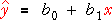
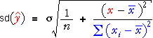
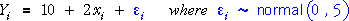
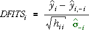
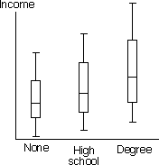
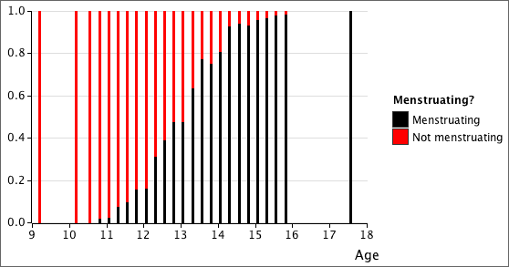

If you don't want to print now,
Normal regression model
In this chapter, we return to the normal linear model, in which the i'th response value in the data set has distribution,

This model is often expressed in the equivalent form,

The least squares estimates of β0 and β1 are again denoted by b0 and b1.
Variability of the least squares line
The variability of the least squares line can be described in terms of the variability of the predictions that are made from it at different x .

These predictions have standard deviation,

From this equation, it is clear that the standard deviation is lowest when
predicting at a value x that is close
to the mean of the x-values in the data,  .
.
Variability of predictions
The diagram below simulates data from a normal linear model.
Click Accumulate then take about 30 samples. Observe that
the least squares line is most variable at values of x
to the left and right of the diagram (away from  ).
).
The standard deviation of the predictions is shown as the graph at the bottom of the diagram. Use the pop-up menu to change the scale in this graph to show the variances of the predictions (the square of their standard deviation). This is a quadratic function of x .
Choosing the x-values
In an experiment, the researcher often has control over the x-values that are used for runs of the experiment. Looking again at the standard deviation of predictions,
it can be seen from the blue sum of squares that the predictions are less
variable (more accurate) when the spread of x-values in the data is large.
The most 'important' observations in the data set are therefore those that
increase this sum of squares — observations that are far from  .
.
Choosing the x-value for one extra run of an experiment
Another way to look at the importance of observations at different x-values
is to consider the effect of taking an extra observation
at x . The best value for x
is one that increases the spread of x-values — a value far from the mean
of the earlier observations,  .
.
Another equivalent way to describe this choice can be more easily extended in later chapters. A new observation at x will have most direct effect on improving predictions at x itself. The improvement will be greatest if the prediction at x was poor (large variance) before the new observation.
The best place to make an extra observation is at an x-value where the fitted values have greatest variance.
The potential benefit of making a new observation at x can therefore be described by its leverage.

Effect of an extra observation at x
The diagram below describes the normal linear model

where observations are made at x = 15, 18, 25 and 26.
The band contains 95% of the least squares lines that would be obtained from a simulation such as the simulation earlier in this page. (More precisely, the band contains 95% of the predictions that would be obtained at each x.)
Click Extra point at to see how the distribution of the predictions changes when a fifth data point is added. The response distribution at this x is represented by a red arrow ±2σ on each side of the response mean — i.e. on each side of the regression line at x .
Use the slider to see how the distribution of the predictions is affected
by the x-value at which the new observation is made. The prediction band
is narrowed by the new observation and this narrowing is most pronounced
when x is furthest from  = 21.
= 21.
Leverage of existing data points
Leverage can be used to describe the potential effect of a new observation at any x-value, but it is most often used to describe the importance of the existing data points.

Note that leverage does not depend on the response, only on the explanatory variable.
Problem with high-leverage observations
High leverage is a good thing if you know that all data arose from a normal linear model of the form

However in practice, we are never certain that all data came from such a model. Possible problems include outliers, curvature, non-constant variance and non-normal errors. If a normal linear model does not underlie all the data, high leverage points can badly affect the least squares estimates of the parameters.
The potential damage from high-leverage points is greatest when there are outliers in the data — response values that are unusually far from the regression line.
If a high-leverage point is also an outlier, it will cause the least squares line to be much less accurate.
Outliers and errors
An outlier is a measurement that does not fit in with the pattern exhibited by the rest of the data. By definition, an outlier does not satisfy the normal linear model that fits the rest of the data, so it should be omitted from the analysis.
In a regression situation, an outlier corresponds to a large error, ε.
In a scatterplot, the point is unusually far above or below the regression line.

Outliers and residuals
Unfortunately, in a real data set, the errors are unknown, so we must use the residuals from the least squares line as estimates of the errors. The residuals can be used in a similar way to give information about whether there is an outlier.


It might be expected that the outlier could be detected by an examination of the residuals from the model. However the high leverage usually results in a residual that is no larger than the others.
An examination of residuals often fails to detect an outlier if it is a high-leverage point.
Illustration
The scatterplot below shows a data set and the corresponding residuals.
The cross on the far right can be dragged with the mouse. Initially, the diagram shows what we would ideally have hoped to see in the residuals — the other points are close to a straight line, so if the final cross is dragged away from this line, we would have hoped that it would result in a large residual.
This is not what actually happens. Choose What you actually get... from the pop-up menu at the top and drag the point again. The least squares line is pulled towards the point, so when it is dragged away from the line followed by the other points, its residual is smaller than might be expected and the residuals for the other points are larger.
This is especially evident when the point being dragged has an x-value of around 4 — i.e. when it is a high leverage point. Drag it down to a y-value of about 40 and observe that its residual is no more extreme than those of the other points.
Do not rely on an extreme residual to tell you whether a high-leverage point is an outlier.
High-leverage points
High-leverage points have a large potential to affect the results of an analysis if they correspond to observations that do not follow the linear model, but the resulting problem may not be evident in an examination of residuals. It is therefore important to identify high-leverage points.
From their definition, it can be easily shown that all leverages sum to 2.
They therefore have an average value of 2/n and their minimum possible value is 1/n. A rule-of-thumb is therefore to carefully examine any points whose leverage is more than twice their average value:
Carefully examine points with leverage hii > 4/n
It is important to note that high leverage does not necessarily mean that there is a problem.
High leverage on its own does not indicate that something is wrong with the normal linear model. Leverage only depends on the explanatory variable and the actual response value may still be consistent with the model
Later in this section, we will investigate whether a high-leverage point actually does influence the results.
Variance of the errors
A key assumption of the normal linear model is that all errors have the same variance,

All responses, yi, therefore also have variance σ2.
Variances of the residuals
The response can be written as,
Now since the variances of the responses and the fitted values are,

where hii is the leverage of the i'th observation, it can be proved that

(A full proof involves showing that the fitted values and residuals are uncorrelated.)
Therefore although the residuals from the least squares line, ei , can be considered to be estimates of the errors, their variances are all lower than σ2. Moreover,
The higher the leverage, the lower the residual variance.
Simulation
The diagram below demonstrates that all residuals do not have the same standard deviations. Response values are simulated from the model,
at x = 1.0, 3.5, 4.0, 4.5 and 5.0. The residuals from the least squares line are plotted against x on the right of the diagram.
Click Accumulate and take about 50 samples. Observe that the residuals have lower spread at x = 1.0 than at the other x-values, because of its higher leverage.
Choose Box plots and ± 2 sd from the pop-up menu to show the differences between the standard deviations of the residuals more clearly.
Theoretical distributions of the residuals
The diagram below shows the above regression model and the theoretical distributions of the residuals in rotating displays.
Need for standardisation
In the previous page, we showed that all residuals do not have the same variance,

Since the residuals at the high-leverage points have lower variances, they are expected to be smaller and fewer than 95% will be outside the ±2σ limits that are often used to suggest outliers.
Standardisation
We therefore standardise the residuals before examining or plotting them,

(Remember that the mean square residual is the best estimate of σ2. This has the effect of scaling up the residuals, especially for the high leverage points.
If the normal linear model holds, the standardised residuals will have approximately normal(0, 1) distributions.
Examples
The diagram below shows a few regression data sets. The ordinary residuals are initially displayed on the right.
Select Standardised residual from the pop-up menu to display the standardised residuals. This makes the residuals on the left and right (with higher leverage) slightly larger, relative to the residuals in the centre.
Repeat with other data sets.
Guidelines for interpreting standardised residuals
If the normal linear model holds, the standardised residuals have approximately standard normal distributions. Therefore approximately 95% of them will be between -2 and +2, and almost all will be between -3 and +3.
Many statistical programs automatically flag standardised residuals outside these ranges as being possible outliers.
Note however that you should expect 5% of standardised residuals to be >2 or <-2, so in large data sets it is not unusual to find several residuals outside ±2 and even a few outside ±3. (There is probability 0.003 that a value from the standard normal distribution will be outside ±3, so it would be expected that 3 values would be outside this range in a data set of 1,000 values.)
In large data sets, do not assume that standardised residuals outside ±3 must be outliers — values a little outside can also occur by chance.
Illustration
The diagram below simulates data from a normal linear model.
Initially the sample size is 20. Generate a few data sets and observe that it is not unusual to find a standardised residual outside ±2.
Increase the sample size and take a few more samples. Observe that standardised residuals outside ±3 occasionally occur.
Need for a better way to detect outliers
Standardised residuals are an improvement — they all have equal variance when the model is correct. However they do not fully compensate for the effect of high leverage points if there are outliers.
Effect of outlier on standardised residuals
In the diagram below, you can alter the top-right data point in the scatterplot on the left by dragging it. The diagram initially shows how the ordinary residuals are affected.
Change the pop-up menu to display the standardised residuals on the right. Observe that this plot is more likely to be show up an outlier as a large or small standardised residual.
Even standardised residuals do not show up outliers well, especially if they are high leverage points.
Deleted residuals
An alternative approach to highlighting outliers is to use deleted residuals. These are defined as
where  is the prediction for the i'th point from the least squares line
fitted to all data except the i'th observation.
is the prediction for the i'th point from the least squares line
fitted to all data except the i'th observation.
Illustration
The diagram below shows a data set with a single high-leverage outlier. The least squares line (grey) is pulled close to this point so its residual does not stand out. (Its standardised residual is not exceptional either.)
The deleted residuals are plotted against x on the right of the diagram. Click on the rightmost cross in the scatterplot on the left. The blue line is the least squares line fitted to all data points except this one. The deleted residual is the red vertical distance from the point to this line.
Click on other crosses to see how their deleted residuals are calculated.
Calculating deleted residuals
Although it would seem from the definition of the deleted residuals that it is necessary to fit n separate least squares lines (omitting each observation once), there is a simpler formula for the deleted residuals that only depends on the ordinary residuals and the leverages,

This formula explains why the deleted residuals give extra weight to the high-leverage points.
Problem with deleted residuals
Although the deleted residuals do highlight the outlier in the example above, they have one major problem. Whereas the ordinary residuals have smaller variance for high leverage points, the deleted residuals have larger variance for the same points. It can be shown that

Standardising the deleted residuals therefore results in the same values as standardising the ordinary residuals.

Ordinary deleted residuals do not offer anything new.
Deleted estimate of standard deviation
Although ordinary deleted residuals do not offer anything new for detecting outliers, a variation is more useful. The ordinary standardised residuals use the mean residual sum of squares (MSResid) from the full data set as an estimate of σ2,

Instead, we define the externally studentised residuals,
where σ is now separately estimated for the i'th residual from the data set without the i'th data point. (This requires a separate calculation of MSResid for each of the n deleted subsets of the data.)
Illustration
The diagram below shows a data set and its ordinary standardised residuals.
Click on any cross on the left to see how the standardised residuals are calculated from the deleted residuals. (They could alternatively be found from the ordinary residuals.) Note that the denominator, , is the same for each standardised residual.
Select Externaly studentised residual from the pop-up menu and repeat. Observe that the estimates of σ are different for the different observations. In particular, note that the estimate is much smaller for the high-leverage outlier, which therefore makes the externally studentised residual stand out more than the ordinary standardised one.
Guidelines
The externally studentised residuals have approximately standard normal distributions, so they can be compared with ±2 (or ±3) to help detect outliers. Remember however that you should expect about 5% of the residuals to be outside ±2 and about 0.3% to be outside ±3, even if there are no outliers, so do not conclude that a residual outside ±3 must be an outlier in large data sets.
(If the sample size, n, is small, the proportions outside ±2 and ±3 are actually greater than 5% and 0.3%. It is actually better to replace ±2 with the 95% point of the t(n - 1) distribution, but this refinement is usually unimportant since the residuals are not used for formal testing.)
It is best to plot the externally studentised residuals against x or the fitted values to see whether any seem unusually large.
Illustration
The scatterplot on the left below shows a data set in which one observation can be altered by dragging.
The ordinary standardised residuals are plotted against x on the right and bands are shaded at ±1, ±2 and ±3. Drag the top-right observation and observe that the standardised residual is never outside the range ±3.
Select Externally studentised residual from the pop-up menu. When the point is dragged, observe that this residual becomes far more 'extreme' when the point is far from the line passing through the other observations (an outlier).
Externally studentised residuals highlight outliers better than ordinary standardised residuals.
Externally studentised residuals are best for finding outliers.
Leverage and influence
High-leverage points have the potential to strongly influence the conclusions from a data set.
Leverage is only a function of the explanatory variable, and we also need to take into account the response values for any high-leverage points to see whether they are actually influential.
Examples
The two diagrams below show data sets with one high-leverage point.
Click Delete high leverage points to delete the point with high leverage from both data sets. Observe that deleting the point...
Measuring influence
We have described a point's 'influence' as its effect on the conclusions that are reached from the data set. To obtain a numerical description of influence, we can describe how each point affects:
(It would also be possible to describe the influence of each point on the residual sum of squares or other statistics, but the above two are the most common ones.)
Influence on fitted values
In this page, we consider how deletion of the i'th point affects the fitted value at the same point,
Illustration
The scatterplot on the left below shows a dataset with one high-leverage point. The changes in the fitted values are plotted against x on the right.
Click on any point to see how the least squares line changes when it is deleted. The change in that point's fitted value from its deletion is shown in red and ploted on the right against x.
DFITS
Since the fitted values do not all have the same variance,
we adjust the difference by dividing by the square root of an estimate (using the deleted standard deviation),

(Note that this is not equivalent to standardisation since we use the standard devation of the fitted value, not of the difference.)
Guidelines
Observations are often classified as 'influential' if,

Note that this is not a hypothesis test and plotting DFITS against x or the fitted values is recommended to help assess whether one or two points have excessive influence.
It can be proved that DFITS is a simple function of the externally studentised residual and the leverage,

Therefore standardising DFITS simply gives the externallly studentised deleted residuals.
Change in least squares coefficients
A second measure of influence looks at how deletion of each point affects the regression coefficients,

High influence points correspond to large differences.
Illustration
A data set with a single high-leverage point is shown in the scatterplot on the left below.
Click on any point to see how the least squares coefficients change when it is deleted from the data set. The scatterplot on the left shows how the intercept changes.
Select Change in slope from the pop-up menu and repeat. Clicking on a point now shows the resulting change in the least squares slope.
Combining the differences
Although we could examine separately the influence of each point on the slope and intercept, it is usual to combine the two differences to give a single measure of influence called Cook's D. Although its formula in terms of the differences is hard to write and explain, it can also be written as,

so it depends on the leverage and a kind of residual (the standardised residual).
Significance would be equivalent to comparing ri with ±2 and ±3, but that is not the purpose of influence statistics. They are evaluated to assess whether one or two data points are exceptionally important.
Relationship between Cook's D and DFITS


Since the two types of residuals, ti and ri, are expected to be similar if the linear regression model holds,

The two influence measures are related and both depend on both leverage and a residual, so
Both high leverage and a large residual are needed to make a point influential.
Guidelines for Cook's D
The guideline for high influence based on DFITS,

translates roughly into a guideline for D,

Again, we are not doing a hypothesis test and this inequality does not correspond to any significance level. It may however indicate that some data points should be given further investigation.
Summary
The diagram below shows how the residuals and measures of influence are related.

Reason for using these diagnostic summaries
Why have we defined residuals, leverage and influence? Are the problems not evident by looking at a scatterplot?
Yes, high-leverage points, outliers and influential points (high leverage and large residuals) are usually evident in a scatterplot for simple linear regression with a single explanatory variable.
However for more advanced models in which the response depends on two or more explanatory variables, it will be much harder to just 'look at the data'. For these models, outliers, high-leverage points and influential points must be detected from summary statistics, such as ti, hii and DFITSi.
Examples
The diagram below shows diagnostics for outliers, leverage and influence in several data sets.
The stacked dot plots on the left show the externally studentised residuals, leverages and DFITS, with shaded bands corresponding to the usual guidelines for 'extreme' values. Click any cross to highlight all three diagnostics for that observation.
Simply from an examination of these diagnostic summaries, it is possible to obtain information about the adequacy of the model and the influence that a single point may have on the results. (Click Peek at data to see a scatterplot of the data that helps to explain the conclusion.)
Select other data sets from the pop-up menu and check the conclusions.
Comparing the response distributions at different x-values
If a response, Y, is numerical and explanatory variable, X, is categorical, box plots can be used to compare the response distribution at the different x-values.

If the response, Y, is categorical and the explanatory variable, X, is numerical, we are again interested in comparing the response distribution at different x-values. We might use X to define 'groups' by splitting its values into classes (as might be done to draw a histogram) and this allows us to use stacked bar charts to describe the relationship.

It is not necessary for the 'classes' to be of equal width. For example, some of the age groups below are of width 3 months, whereas others are 6 months and the extreme classes are wider still.

Linear model
It is tempting to try a linear model to explain how the proportion in one response category is affected by the explanatory variable,
predicted proportion, 
Unfortunately this may result in predicted proportions greater than 1 or less than 0.

Nonlinear models
We should use a model that gives values between 0 and 1 for all possible values of X. This means that the equation must be nonlinear in X.

A curve that lies between 0 and 1 for all values of x
Various nonlinear equations have values between 0 and 1 for all values of x, but the simplest of these is a logistic curve,
predicted proportion, 
The parameters of the logistic curve
The parameter b1 is called the slope of the curve. Increasing it makes the curve steeper, and its sign determines whether the curve slopes upwards or downwards.

The parameter b0 is the curve's intercept and it determines the horizontal position of the curve. Increasing it shifts the curve to the left.

Estimating the logistic parameters
Estimating the parameters b0 and b1 of a logistic model is more difficult than estimating the parameters for a linear model by least squares, but many statistical programs will do the appropriate calculations for you.
We therefore take a 'black box' approach and simply show what parameter estimation gives without further justification.